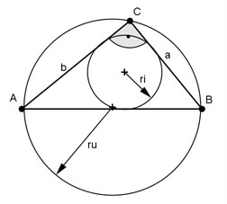
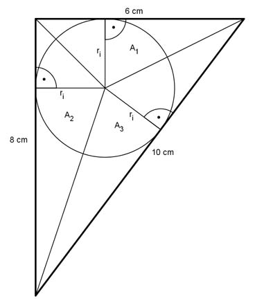

Pythagoras Aufgabe 40 In einem rechtwinkligen Dreieck sind die Kathete a = 6 cm und b = 8 cm lang. Berechnen Sie den Inkreisradius ri und den Umkreisradius ru in cm.  AB = c c² = a² + b² = 6² cm² + 8² cm² c² = 100 cm² |√ c = 10 cm Der Umfangskreis ist der Thaleskreis c 10 cm ru = --- = ------- = 5 cm 2 2  A = A1 + A2 + A3 ri = Höhe der jeweiligen Teildreiecke 6 * 8 6 * ri 8 * ri 10 * ri ------- = -------- + -------- + --------- 2 2 2 2 24 = 3ri + 4ri + 5ri 24 = 12ri |:12 ri = 2 cm